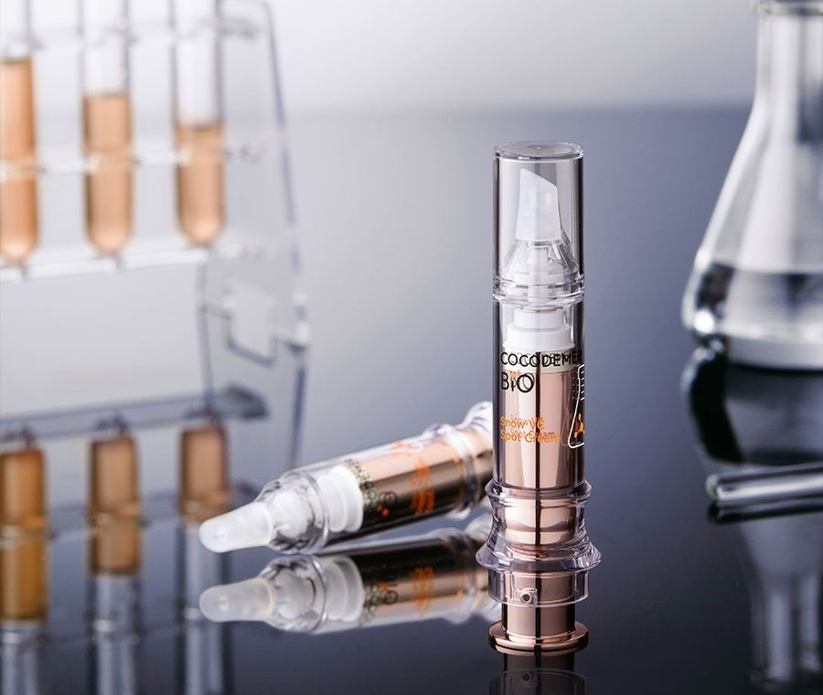
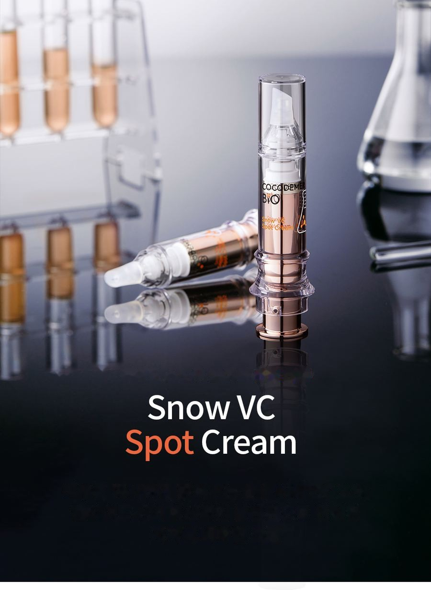
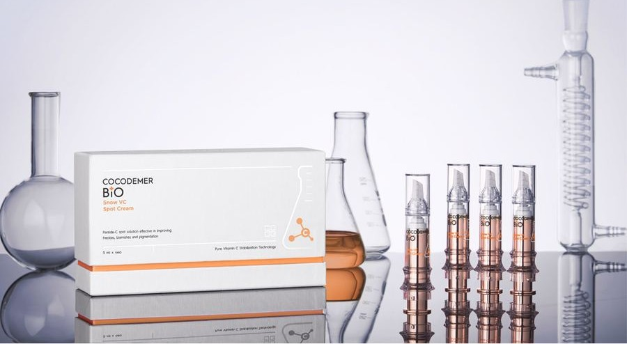
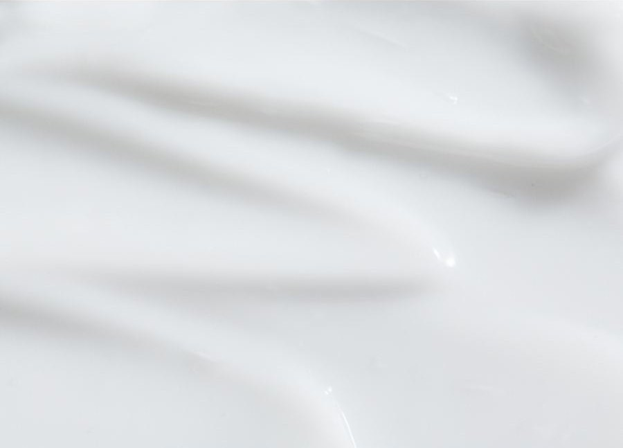
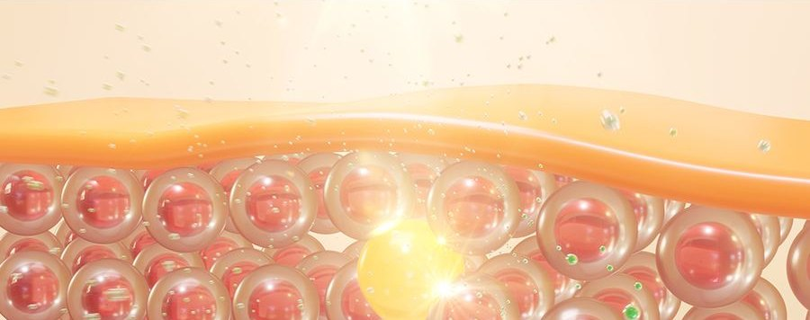
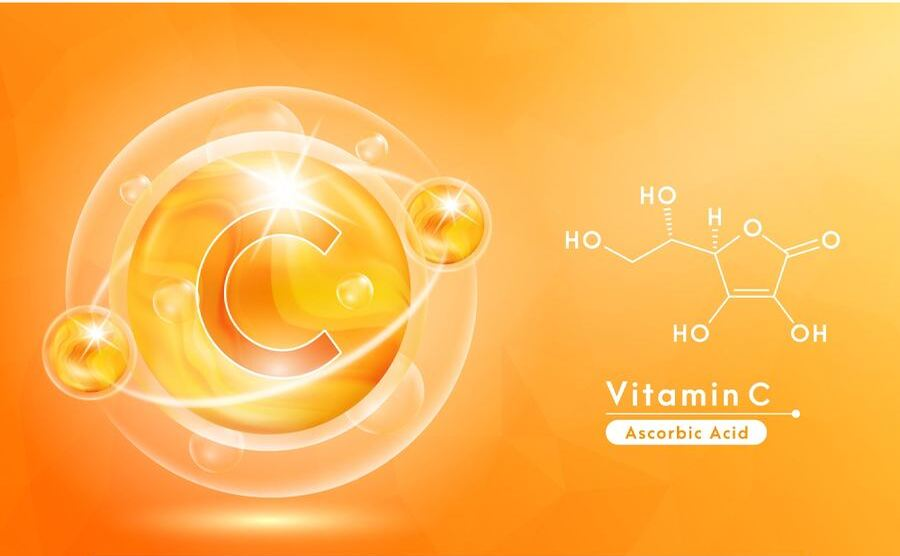
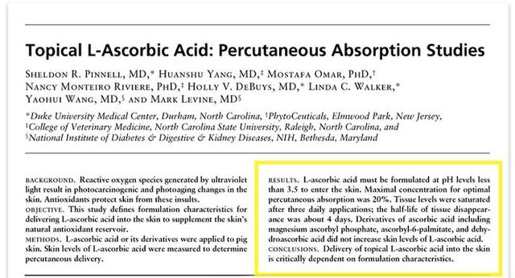
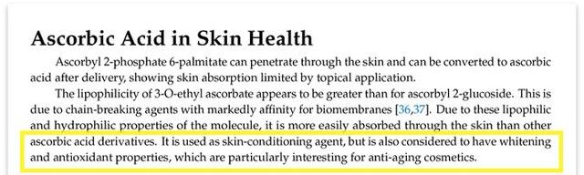
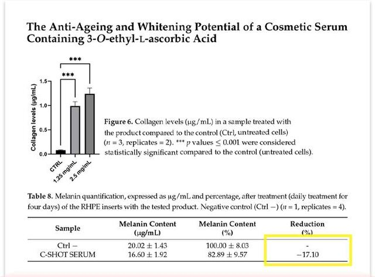
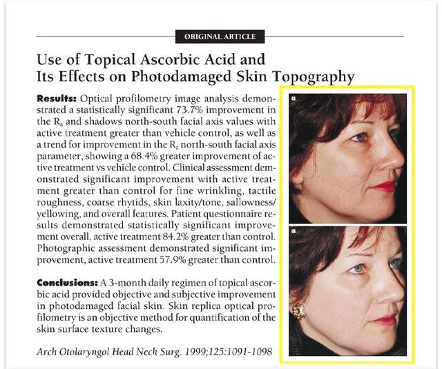

COCODEMER BIO Snow VC Spot Cream Set
| 容量 | 5ml x 4 入 |
|---|---|
| 適用膚質 | 所有膚質 |
| 核心技術 | Snow VC 雙重穩定技術 |
| 製造業者 · 化粧品責任銷售業者 | JUNGCOS CO., LTD. / COCODEMER CO., LTD. |
本產品透過 COCODEMER BIO 以原料為本的取徑開發。目前未販售。如欲洽詢重新生產或改版，請透過 B2B 諮詢與我們聯繫。

以 20% 純維生素 C 與 Pentide-C 的創新調和為基礎，讓肌膚明亮的溫和維生素乳霜。
以肌膚本身的健康，讓膚色明亮的高端肌膚解決方案。
以無水工法穩定、克服維生素 C 常見限制的 20% 純維生素 C，與結合維生素 C 及胜肽的生物來源原料 Pentide-C 調和。兩者共同作用，讓肌膚清透、有活力、散發光采。
維生素原 B5 泛醇與杏桃核仁油迅速補充水分與營養，讓肌膚水潤緊實。
高濃縮乳霜質地滑順服貼地融入肌膚，帶來柔軟、富彈性的觸感。

以無水工法克服維生素 C 的缺點並加以穩定化的「20% 純維生素 C」，搭配結合維生素 C 與胜肽的生物原料「Pentide-C」。兩者共同活化肌膚本身的活力，由內而外增添透亮能量，讓肌膚看起來清透、煥采而明亮。
維生素原 B5 泛醇與杏桃核仁油迅速補充水分與營養，讓肌膚水潤、緊實而健康。
指尖觸感絲滑的高濃縮乳霜，緩慢而均勻地融入肌膚，讓肌膚柔軟而富彈性。

核心活性成分代碼
結合維生素 C 與胜肽的生物原料，低刺激且能深入滲透，為肌膚帶來最健康、最有活力的狀態。它將有效成分傳遞至肌膚深處，滋養疲憊、黯沉的肌膚，幫助肌膚看起來清透緊實。
※ 抗壞血酸衍生物及包含其之組成物——採用「皮膚滲透型維生素 C 衍生物」專利技術（Ascorbic Acid derivatives and compositions comprising the same）[專利號：韓國 1020200097988／國際：PCT/KR2021/010279]

以 0% 純水的無水工法，將 20% 純維生素 C 與發酵保濕成分及生物脂質進行雙重穩定化，實現抗氧化解決方案。包覆活性成分以防止變色；成分不受 pH 影響，溫和地深入肌膚，柔軟的質地幫助養分順暢地傳遞至肌膚。
※ 採用純維生素 C 化粧品組成物及其使用方法之專利技術（Application of pure VitaminC cosmetic composition and patent technology using this method）[專利號：1020220174744]
* 以上內容為成分說明，並非針對成品。
* 以上內容僅適用於該特定成分。
使用方法
- 潔顏後，於保養程序的第一步取適量，在色素沉澱部位輕柔地滾動塗抹均勻。
- 輕拍至吸收。
- 使用後外出時，建議務必同時使用防曬產品。
[維生素 C] 以上資訊與本產品無關。

上方圖片中的文字
維生素C
Ascorbic Acid
維生素 C（抗壞血酸）的功效
- 抗氧化效果：對抗加速老化的活性氧，發揮抗氧化作用
- 美白：其抗氧化成分可抑制黑色素生成，有助於提亮肌膚
- 抗老：其抗氧化成分可防止肌膚細胞老化，有助於抗老
- 誘導膠原蛋白合成：誘導膠原蛋白合成，有助於膠原蛋白生成與肌膚彈性

抗壞血酸在 pH 3.5、濃度 20% 時經皮吸收效果最佳。[參考文獻] Topical L-Ascorbic Acid: Percutaneous Absorption Studies. linda walker. 2001 by the American Society for Dermatologic Surgery, Inc. Published by Blackwell Science, Inc. Dermatol Surg 2001;27:137–142

抗壞血酸在抗老化妝品中被認為具有美白與抗氧化特性。[參考文獻] Ascorbic Acid in Skin Health. Soledad Ravetti 18 September 2019.

抗壞血酸具有增加膠原蛋白生成、減少黑色素含量的效果。[參考文獻] The Anti-Ageing and Whitening Potential of a Cosmetic Serum Containing 3-O-ethyl-L-ascorbic Acid. Nicola Zerbinati. 26 April 2021. Licensee MDPI, Basel, Switzerland.

抗壞血酸有助於改善受光損傷的臉部肌膚。[參考文獻] Use of Topical Ascorbic Acid and Its Effects on Photodamaged Skin Topograghy. Steven S. Traikovich, DO. 1999 American Medical Association. All rights reserved.
* 以上資訊與本產品無關。
以肌膚本身的健康，讓膚色明亮的高端肌膚解決方案。
以無水工法穩定、克服維生素 C 常見限制的 20% 純維生素 C，與結合維生素 C 及胜肽的生物來源原料 Pentide-C 調和。兩者共同作用，讓肌膚清透、有活力、散發光采。
維生素原 B5 泛醇與杏桃核仁油迅速補充水分與營養，讓肌膚水潤緊實。
高濃縮乳霜質地滑順服貼地融入肌膚，帶來柔軟、富彈性的觸感。
以無水工法克服維生素 C 的缺點並加以穩定化的「20% 純維生素 C」，搭配結合維生素 C 與胜肽的生物原料「Pentide-C」。兩者共同活化肌膚本身的活力，由內而外增添透亮能量，讓肌膚看起來清透、煥采而明亮。
維生素原 B5 泛醇與杏桃核仁油迅速補充水分與營養，讓肌膚水潤、緊實而健康。
指尖觸感絲滑的高濃縮乳霜，緩慢而均勻地融入肌膚，讓肌膚柔軟而富彈性。
以 0% 純水的無水工法，將 20% 純維生素 C 與發酵保濕成分及生物脂質進行雙重穩定化，實現抗氧化解決方案。包覆活性成分以防止變色，成分不受 pH 影響，溫和地深入肌膚。※ 採用純維生素 C 化粧品組成物及其使用方法之專利技術（專利號：KR 10-2020-0097988／國際 PCT/KR2021/010279）
結合維生素 C 與胜肽的生物原料，低刺激且能深入滲透，為肌膚帶來最健康、最有活力的狀態。它將有效成分傳遞至肌膚深處，滋養疲憊、黯沉的肌膚，幫助肌膚看起來清透緊實。
* 以上內容為成分說明，並非針對成品。
① 潔顏後，於保養程序的第一步取適量，在色素沉澱部位輕柔地滾動塗抹均勻。② 輕拍至吸收。③ 使用後外出時，建議務必同時使用防曬產品。
| 淨重或容量 | 5ml x 4 入 |
|---|---|
| 適用膚質 | 所有膚質 |
| 保存期限／開封後使用期限 | 製造日起 36 個月；開封後請於 12 個月內使用完畢 |
| 使用方法 | 潔顏後，於保養程序的第一步取適量，在色素沉澱部位輕柔地滾動塗抹。輕拍至吸收。使用後外出時，建議務必同時使用防曬產品。 |
| 化粧品製造業者 | JUNGCOS CO., LTD. |
| 化粧品責任銷售業者 | COCODEMER CO., LTD. |
| 原產地 | 大韓民國 |
| 全成分（INCI） | Propanediol, Ascorbic Acid, Butylene Glycol, Glycerin, Pentylene Glycol, Candida Bombicola/Glucose/Methyl Rapeseedate Ferment, Glyceryl Glucoside, Ammonium Acryloyldimethyltaurate/VP Copolymer, Panthenol, Prunus Armeniaca (Apricot) Kernel Oil, Sodium Polyacrylate, Polyquaternium-10, Ferulic Acid, Water, Ascorbyl Methylcarbonyl Pentapeptide-72 Tri-t-Butyl Tryptophanamide |
| 機能性化粧品審查核准 | 不適用 |
| 使用注意事項 | 1. 使用期間或使用後，或經陽光直射後，使用部位如出現紅斑、腫脹、搔癢等異常反應，請諮詢專科醫師。2. 請避免用於破損或有傷口的肌膚。3. 保存及使用注意事項 a) 請置於兒童無法取得之處。b) 請避免陽光直射。 |
| 品質保證 | 產品如有瑕疵，將依韓國公平交易委員會公告之消費者爭議解決標準予以補償。 |
| 消費者諮詢 | 010-3307-9341 / cocodemer@cocodemer.co.kr |
* 依韓國化粧品標示及廣告規定須揭露的事項。本內容為參考譯文；如需經認證的成分聲明、CPSR 或 CoA，請透過 B2B 諮詢與我們聯繫。
從原料出發的 COCODEMER BIO
Snow VC Spot Cream Set 是
以 COCODEMER BIO 之名首度製成產品的案例。